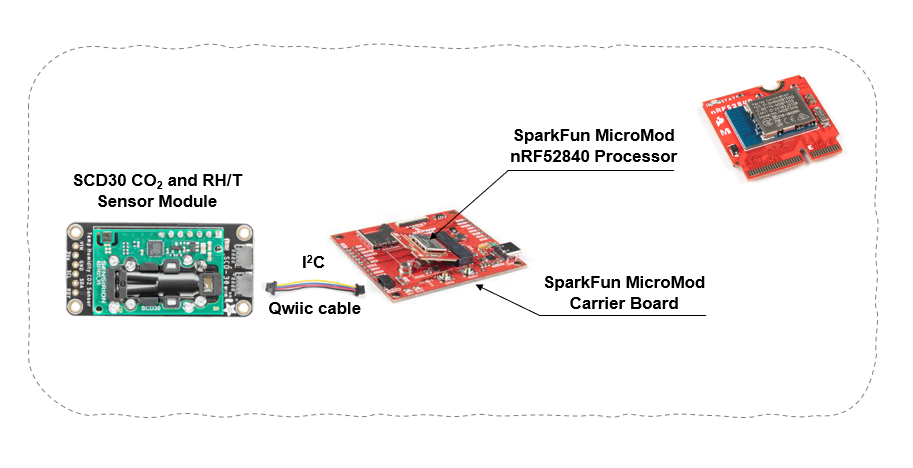
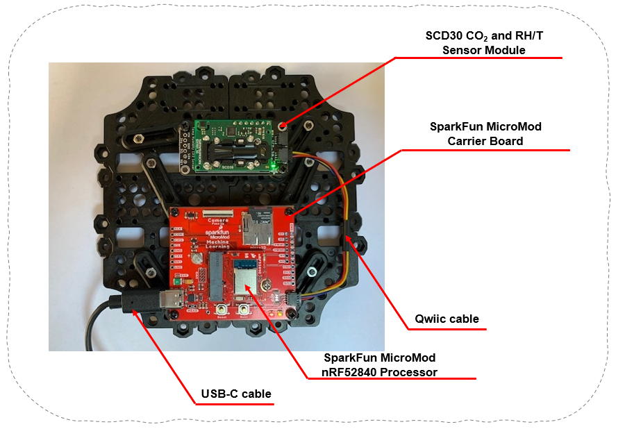

Sensor Module
The sensor module consists of a microcontroller (MCU), the SparFun MicroMod nRF52840 Processer mounted on a MicroMod carrier board, and the SCD30 CO2-sensor from Sensirion. The SCD30 is a 'true' CO2 sensor that will tell you the CO2 ppm (parts-per-million) composition of ambient air.

Sensor Module - Firmware
The SparkFun SCD30 CO₂ Sensor Library v1.0.13 is used.
/* Sensor Module
* Copyright (c) 2021
* [*Effecten van luchtkwaliteit op de gezondheid in accommodaties van schepen
* (ELGAS) TETRA-project HBC.2019.2033](https://www.kdg.be/ELGAS)
*
* Permission is hereby granted, free of charge, to any person
* obtaining a copy of this software and associated documentation
* files (the "Software"), to deal in the Software without
* restriction, including without limitation the rights to use,
* copy, modify, merge, publish, distribute, sublicense, and/or sell
* copies of the Software, and to permit persons to whom the
* Software is furnished to do so, subject to the following
* conditions:
* The above copyright notice and this permission notice shall be
* included in all copies or substantial portions of the Software.
* THE SOFTWARE IS PROVIDED "AS IS", WITHOUT WARRANTY OF ANY KIND,
* EXPRESS OR IMPLIED, INCLUDING BUT NOT LIMITED TO THE WARRANTIES
* OF MERCHANTABILITY, FITNESS FOR A PARTICULAR PURPOSE AND
* NONINFRINGEMENT. IN NO EVENT SHALL THE AUTHORS OR COPYRIGHT
* HOLDERS BE LIABLE FOR ANY CLAIM, DAMAGES OR OTHER LIABILITY,
* WHETHER IN AN ACTION OF CONTRACT, TORT OR OTHERWISE, ARISING
* FROM, OUT OF OR IN CONNECTION WITH THE SOFTWARE OR THE USE OR
* OTHER DEALINGS IN THE SOFTWARE.
*/
#include "Arduino.h"
#include <Wire.h>
#include "SparkFun_SCD30_Arduino_Library.h" // http://librarymanager/All#SparkFun_SCD30
SCD30 scd30;
uint16_t counter = 0;
struct SCD30Sensor {
float Temperature = -999;
float Humidity = -999;
uint16_t CO2 = 0;
} SCD30Sensor;
void serialPrint(){
// Serial output:
// OK,Temperature [°C], Humidity [%], CO2 [ppm],X
Serial.print("OK");
Serial.print(",");
Serial.print(counter);
Serial.print(",");
Serial.print(SCD30Sensor.Temperature, 1);
Serial.print(",");
Serial.print(SCD30Sensor.Humidity, 0);
Serial.print(",");
Serial.print(SCD30Sensor.CO2);
Serial.print(",");
Serial.println("X");
Serial.flush();
}
void setup()
{
Serial.begin(115200);
Wire.begin();
if (scd30.begin() == false)
{
Serial.println("SCD30 sensor not detected. Please check wiring. Freezing...");
while (1);
}
Serial.flush();
}
void loop()
{
//The default configuration is used where SCD30 has data ready every two seconds.
int inByte = 0;
if(Serial.available() > 0){
inByte = Serial.read();
}
switch(inByte){
case 115: // use a simple 'communication protocol', in this case ASCII lower case letter s
counter++;
while(!scd30.dataAvailable()){
// Wait untill data is available
}
SCD30Sensor.Temperature = scd30.getTemperature();
SCD30Sensor.Humidity = scd30.getHumidity();
SCD30Sensor.CO2 = scd30.getCO2();
serialPrint();
}
}
The output on the serial port (in this example COM14):

Sensor Module - Python
A Python function to read data from the sensor module is shown below.
def read_serial(com_port, baud_rate):
ser = serial.Serial(com_port, baud_rate, bytesize=8, parity='N',\
stopbits=1, timeout=1)
ser.flush()
ser.write(bytes(b"s"))
time.sleep(2) # wait two seconds, the default configuration is used where SCD30 has data ready every two seconds.
data = ser.read(24)
ser.close()
return data
import serial
import time
COM_PORT = 'com14'
BAUD_RATE = '115200'
sample = read_serial(COM_PORT, BAUD_RATE)
print(sample)
Terminal output:
b'OK,1,27.6,47,943,X\r\n'